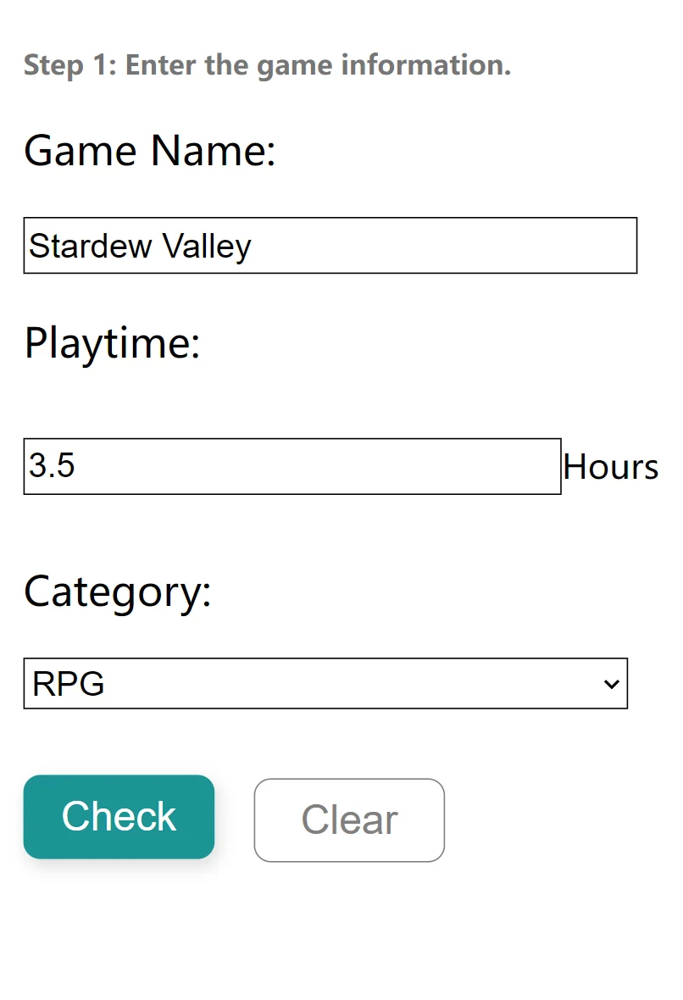
Step 01
Fill in three fields
Name, hours to one decimal place, and one of eleven genres. Clear empties all three at once.
Project 02 · Web app, designed and built
Steam will tell you that you have played a game for three hundred hours. It will not tell you how long you played today. This app keeps every session you add, so the total for today is a number you can see.
No account · No server · Nothing leaves the browser
01 — The interface
The homepage is a Steam store image, one sentence about privacy, and the form directly underneath. No account, no menu, no second page. The history sits below it in the same view, newest first, and every entry carries its date and a running total.
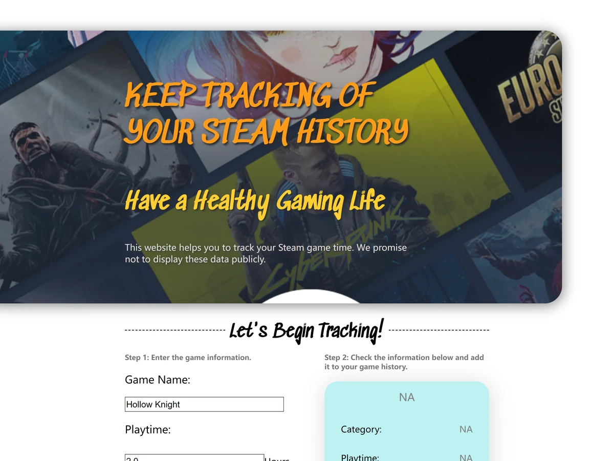
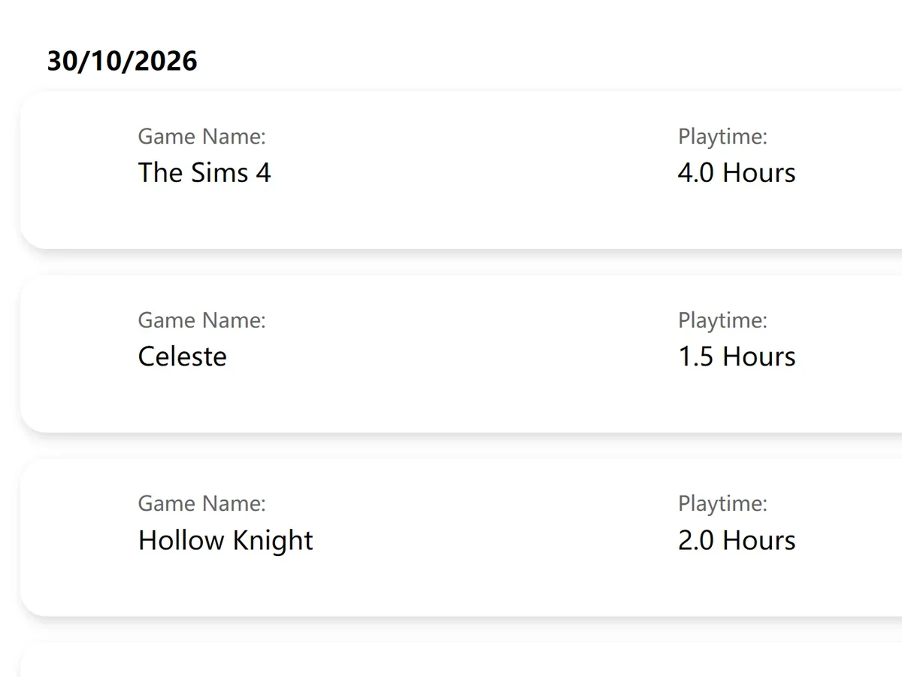
02 — How it behaves
Check reads the three fields and writes them into a mint card. Add puts that card into the history. Between the two clicks you get to read back what you typed. Before the first one, six different mistakes each get their own message, printed under the field that caused it.

Name, hours to one decimal place, and one of eleven genres. Clear empties all three at once.
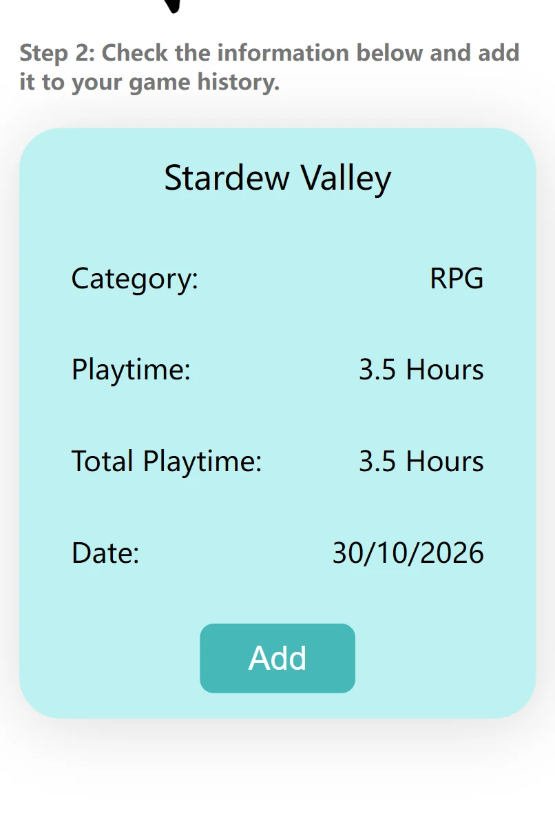
Check writes the entry into a mint card: name, genre, this session, the running total for that game, and the date. Nothing is saved until you press Add.
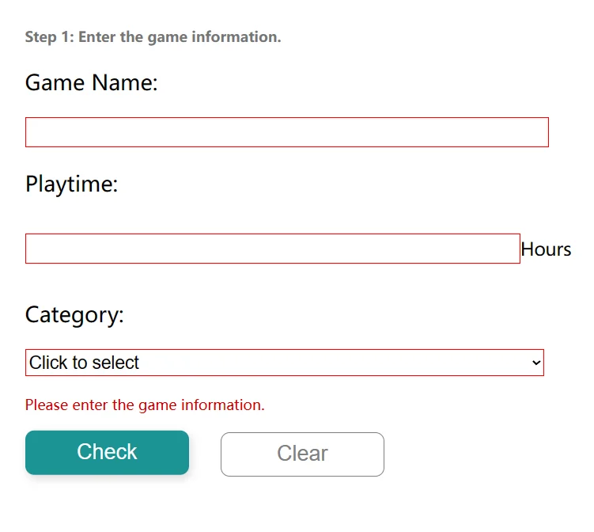
“Please enter the game information.”
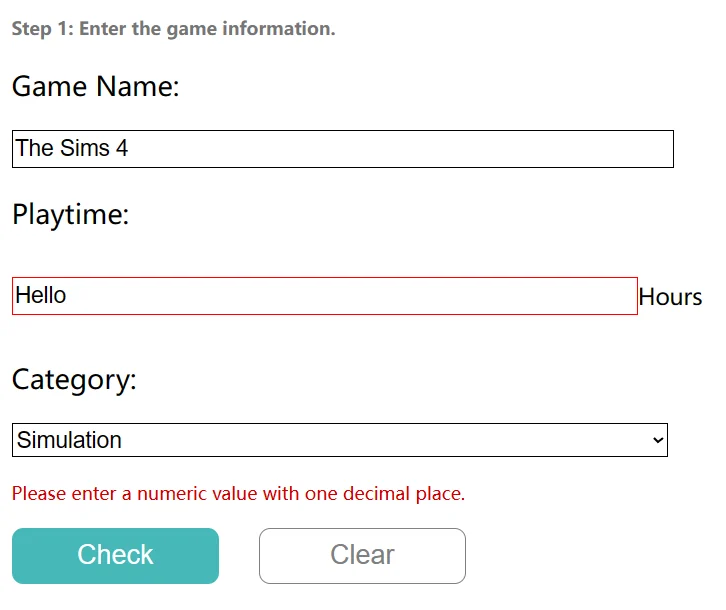
“Please enter a numeric value with one decimal place.”
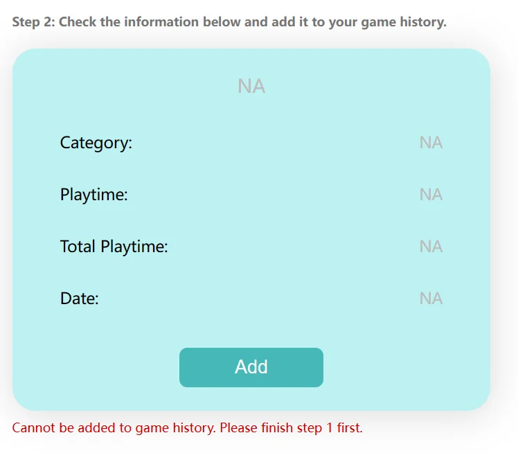
“Cannot be added to game history. Please finish step 1 first.”
03 — It is a website, so use it
Add a game, watch the total change, refresh the page and it is still there. Everything you type stays in your own browser. I cannot see any of it, and nothing is sent anywhere.
04 — Mockup to mockup
My tutor's feedback on version one was blunt: you cannot read the game information against that background. So I looked at sites that are easy to read and wrote down what they had in common: a white page with one accent colour, content held inside margins rather than stretched across a wide screen, and instructions where the user is about to act.
Version one also drew its cover art from Steam. That endpoint turned out not to exist, so the pictures left the design and the history kept the three fields. Section 07 explains what stopped it.
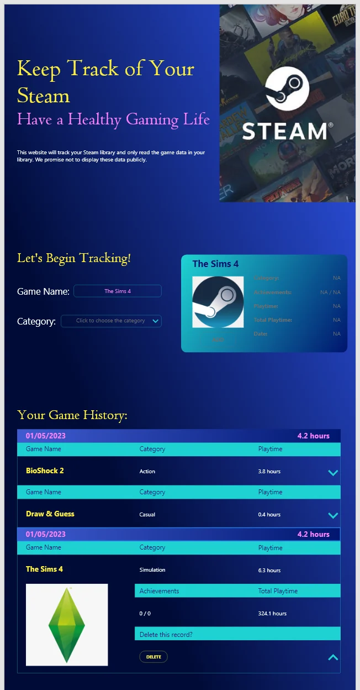
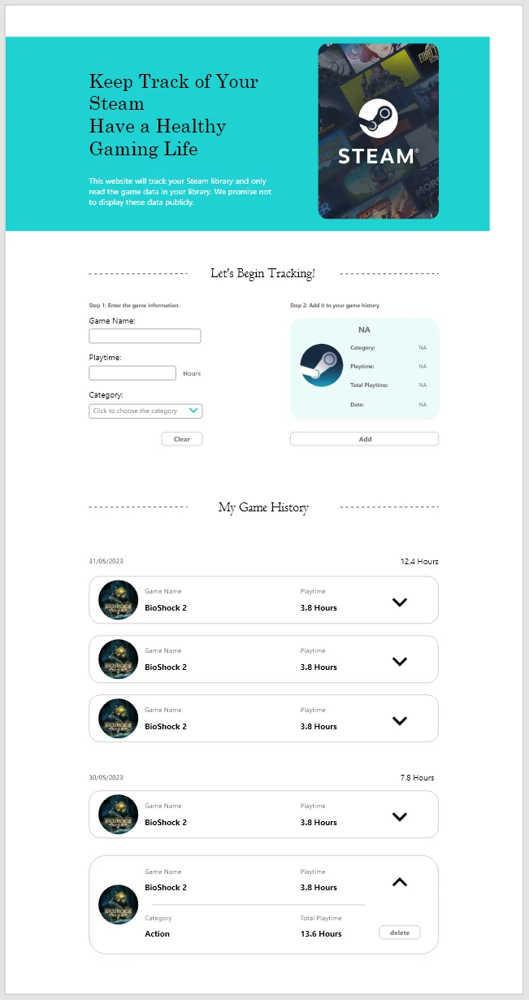
05 — Phone, tablet, desktop
Above 1024px the two steps sit side by side: you type on the left and read the result on the right without moving your eyes. At 1024px and below that stops being possible, so the grid collapses and the preview card drops underneath the form, in the order you use it.
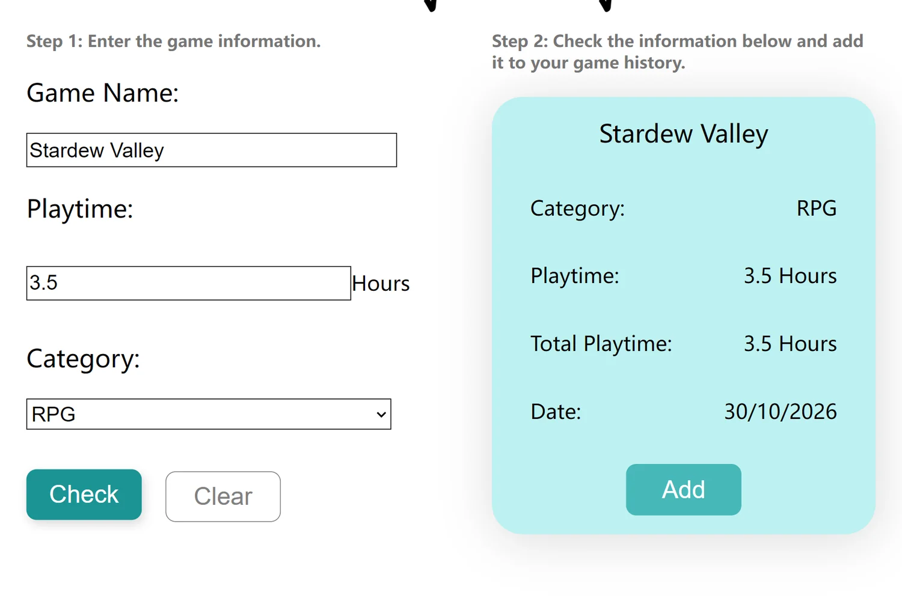
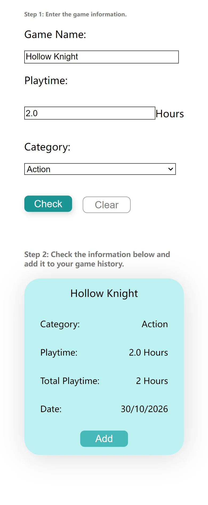
06 — Built, and what holds it together
The build followed the course in order: a Node and Express server serving a static folder, then Parcel and SCSS on top of it, then the form and the history. Nine commits between 28 May and 7 June 2023, one working step in each. There is no database behind any of it. The whole app is one array in localStorage, redrawn by one function every time something changes.
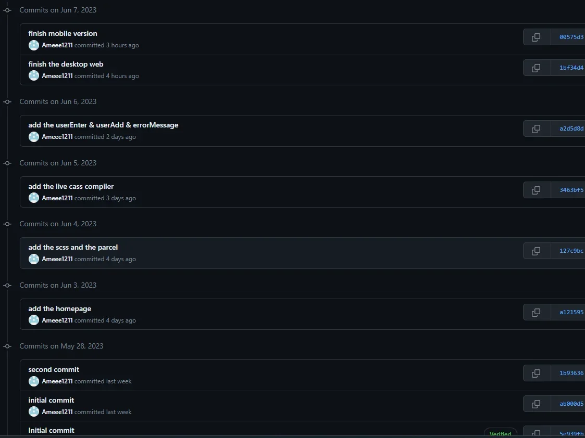
From “add the homepage” to “finish mobile version”. Small enough that any one of them could be the last version that worked.
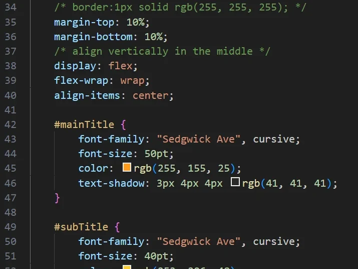
Nested selectors and variables saved the responsive layer from being written out three times by hand.
The function that does the redraw is updateGameHis(), lines 171 to 253 of a
291-line script.js. It empties the list, reads the array back out of localStorage, writes
a card for every record, then attaches the open and delete handlers to elements that did
not exist a moment earlier. It is the longest function in the file and the only one I
commented line by line.
07 — Known issues & future versions
These were the notes I left myself when I handed the assignment in, in the order I would tackle them. The first one is the feature I actually wanted and never shipped. It failed on the API, not on time.
The whole first mockup was built around this: you type a game, the app recognises it, pulls the cover art and the hours you have already put in, and the history fills itself. I went looking for the endpoint that would allow it, and found three problems that a static website cannot get around.
So it stayed manual: three fields, typed by hand. A tracker you fill in yourself is the only version of this idea that runs as a plain web page, and typing the number is what makes it feel like yours.
The tablet and phone blocks repeat rules that differ only by a margin. They work, and they are the least tidy code in the project.
Next version: fold both into one mixin that takes the spacing as an argument, instead of writing the block out twice.
The Steam artwork moves with the page instead of staying put, so the one moment that sets the mood is gone as soon as you move.
Next version: background-attachment: fixed on desktop and a static
crop on mobile, where the fixed version behaves badly.